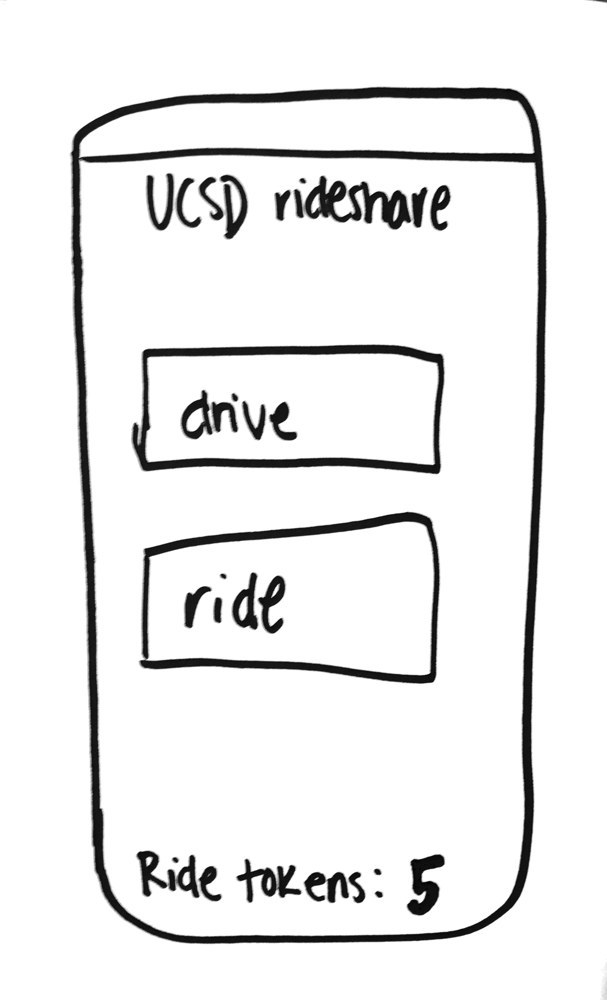
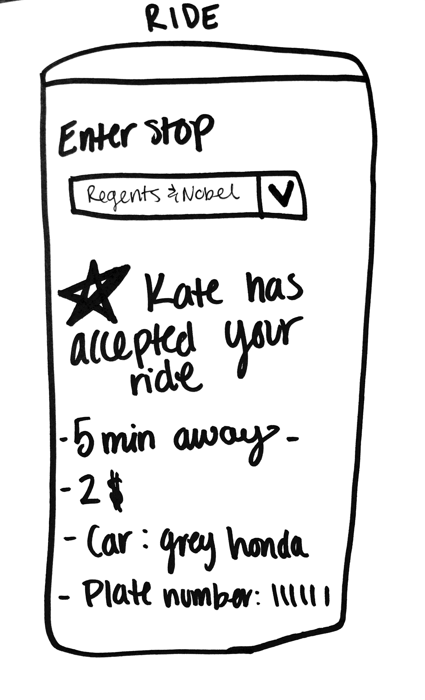
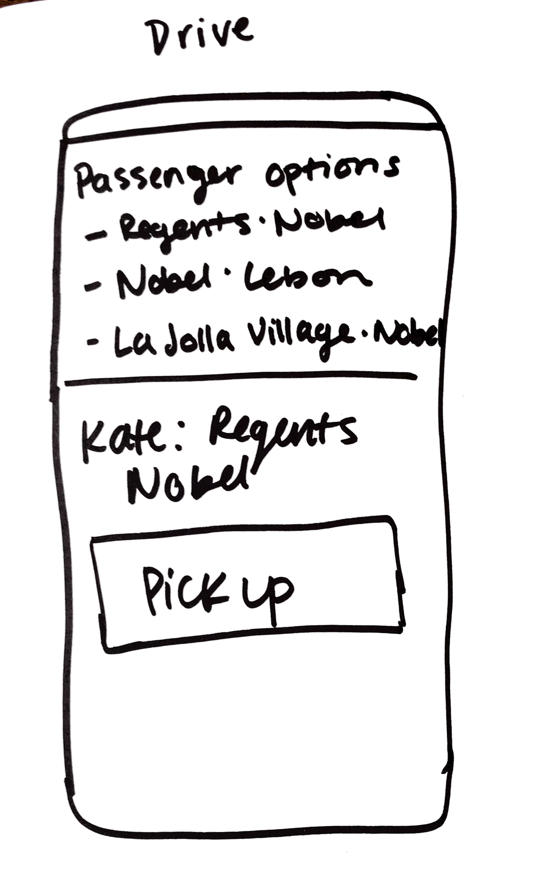
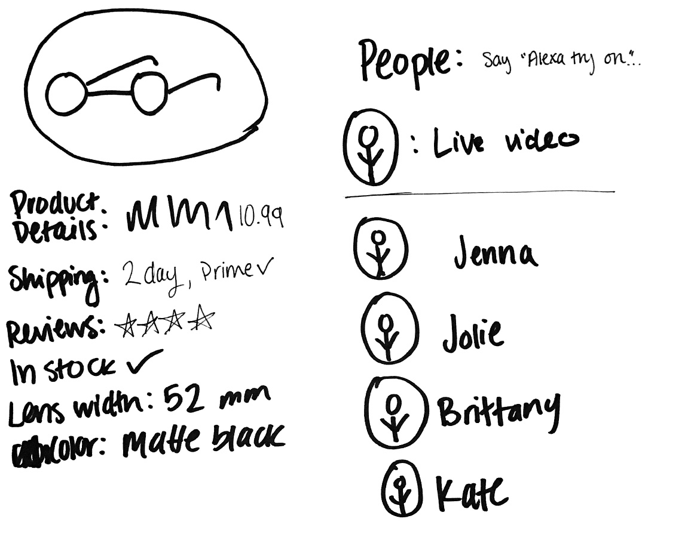
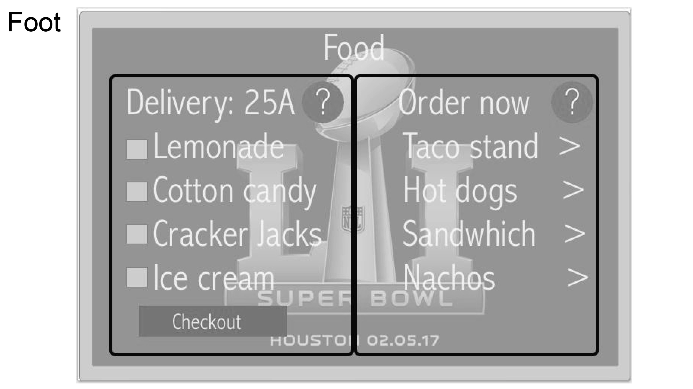
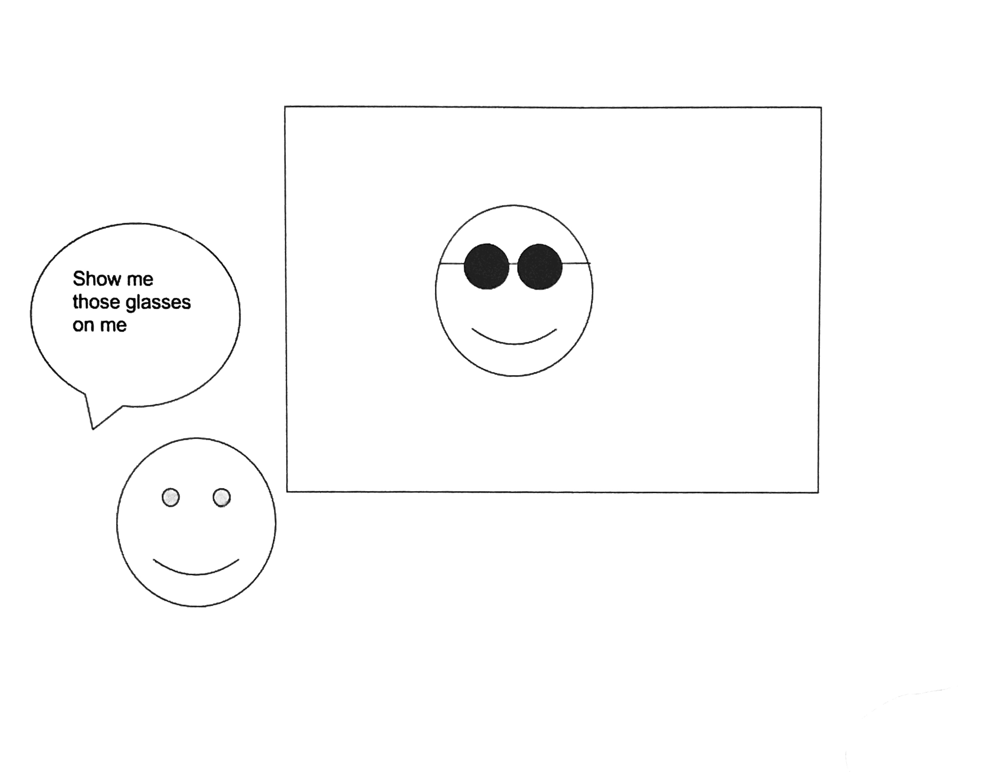
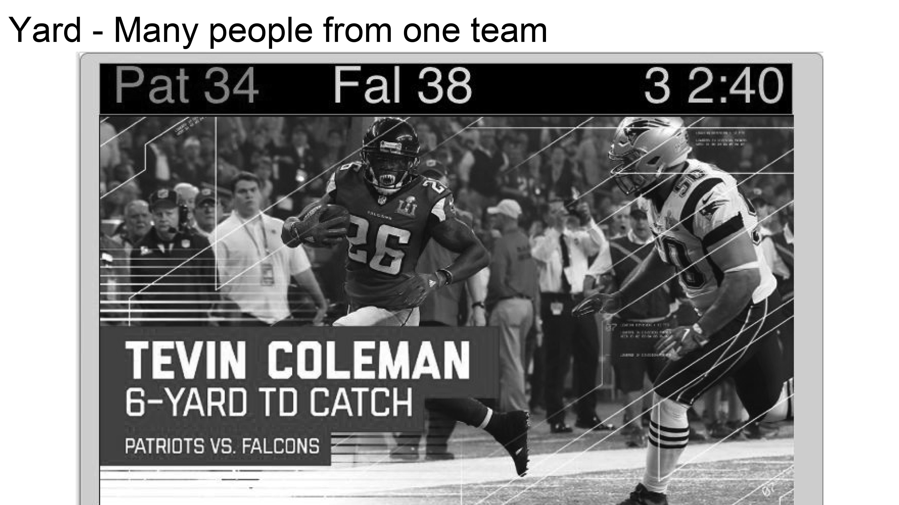
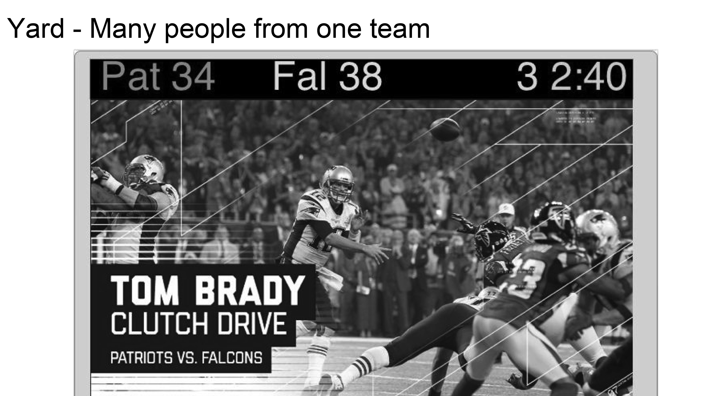
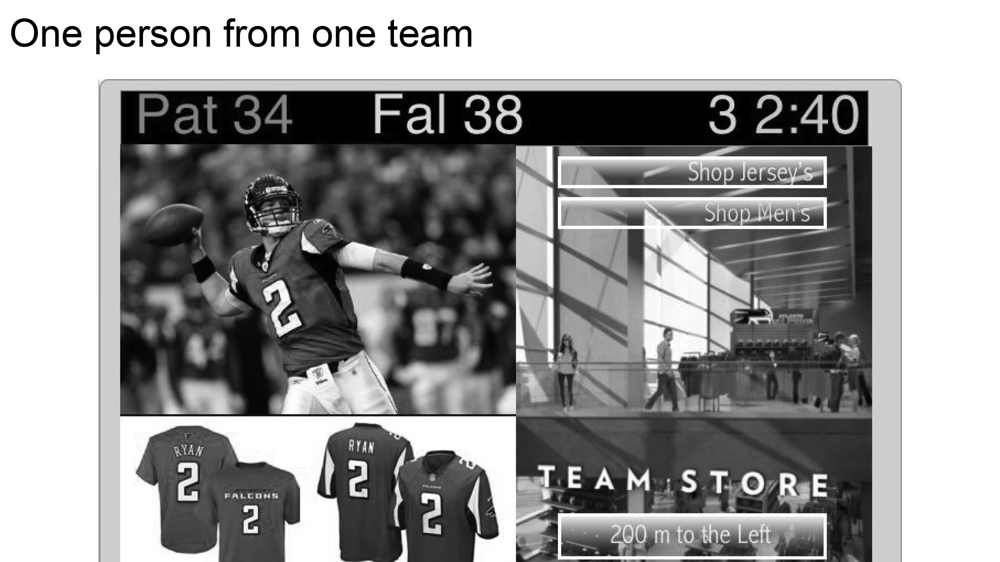

Persona: Someone at a football game! Chris loves football, but missing parts of the game due to bathroom lines, or waiting for food orders can suck. The inch scale is a watch to be worn, input is location. The foot scale is tablets on every seat to help replay missed moments and order food to you, input is touch. The yard scale would be interactive screens that are located where there are long lines, like bathrooms and food areas, input is amount of people and team colors they are wearing.








